Appendix III: Polyhedra Plates by Leonardo da Vinci¶
Sixty Perspective Woodcuts of the Regular and Dependent Solids in Solid and Skeletal Views
Sixty full-page woodcut plates of the Five Regular Platonic Solids and their Truncated (abscisa), Elevated/Stellated (elevata), and Prismatic/Pyramidal/Spherical Dependent Bodies in Solid (planum/solidum) and Skeletal (vacuum) perspective views, drawn by Leonardo da Vinci.
Plate I (Folio 0187) — Solid Regular Tetrahedron¶
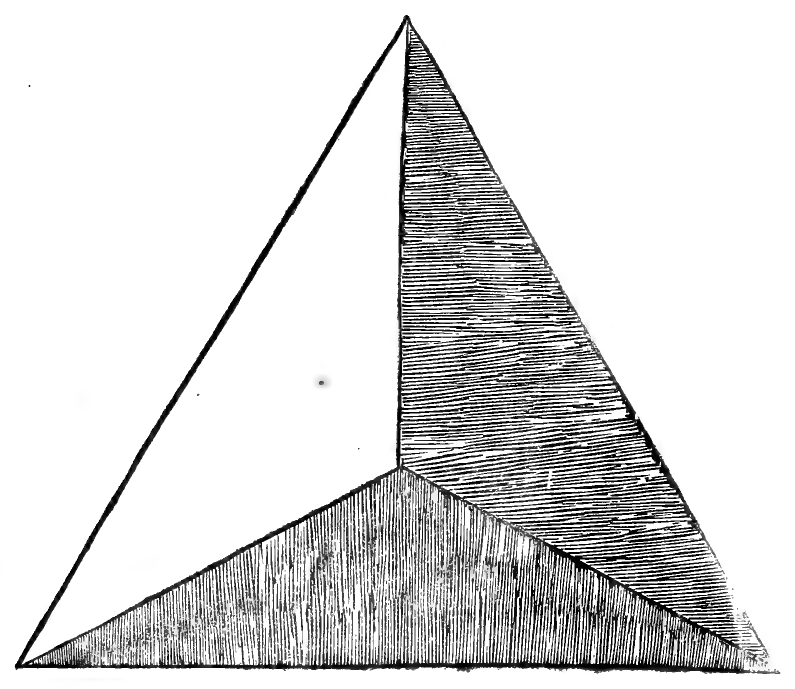
Solid Regular Tetrahedron — Tetrahedron Planum Solidum (Τετράεδρον ἐπίπεδον στερεόν)¶
Plate II (Folio 0189) — Hollow Regular Tetrahedron¶
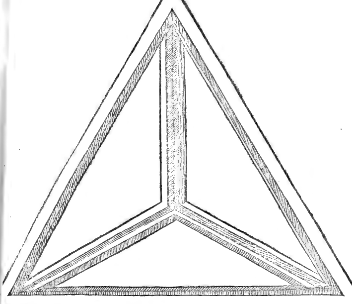
Hollow Regular Tetrahedron — Tetrahedron Planum Vacuum (Τετράεδρον ἐπίπεδον κενόν)¶
Plate III (Folio 0191) — Solid Truncated Tetrahedron¶
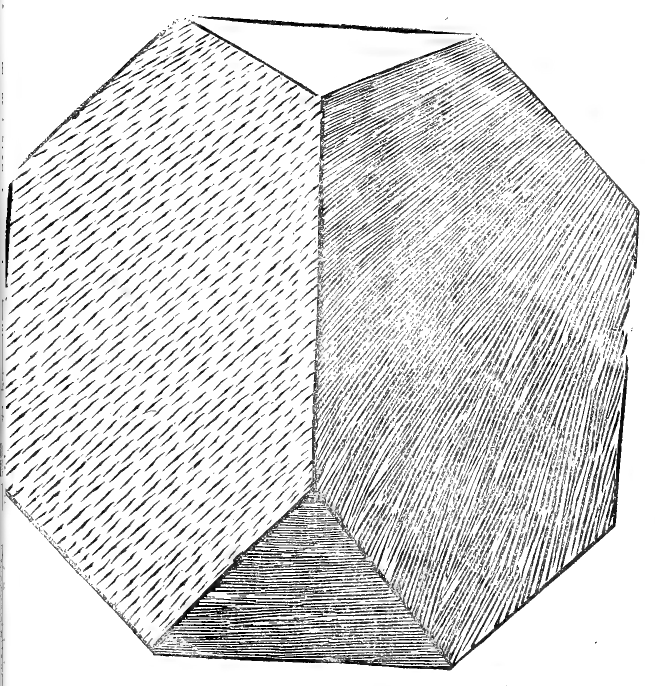
Solid Truncated Tetrahedron — Tetrahedron Abscisum Solidum (Τετράεδρον ἀποτετμημένον στερεόν)¶
Plate IIII (Folio 0193) — Hollow Truncated Tetrahedron¶
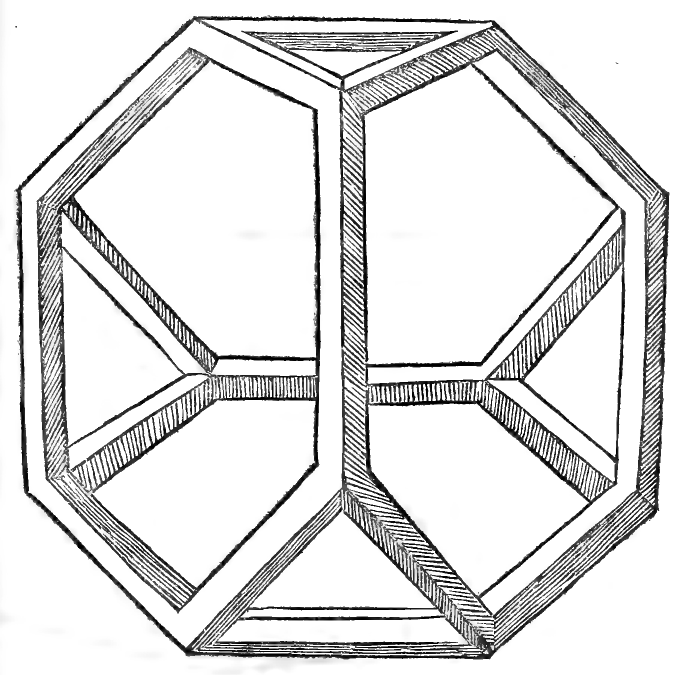
Hollow Truncated Tetrahedron — Tetrahedron Abscisum Vacuum (Τετράεδρον ἀποτετμημένον κενόν)¶
Plate V (Folio 0195) — Solid Stellated (Elevated) Tetrahedron¶
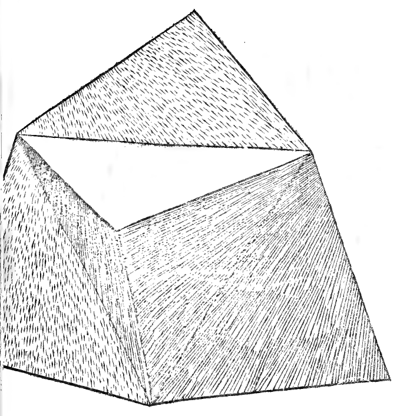
Solid Stellated (Elevated) Tetrahedron — Tetrahedron Elevatum Solidum (Τετράεδρον ἐπηρμένον στερεόν)¶
Plate VI (Folio 0197) — Hollow Stellated (Elevated) Tetrahedron¶
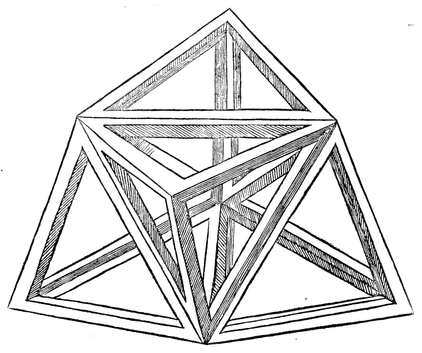
Hollow Stellated (Elevated) Tetrahedron — Tetrahedron Elevatum Vacuum (Τετράεδρον ἐπηρμένον κενόν)¶
Plate VII (Folio 0199) — Solid Regular Hexahedron (Cube)¶
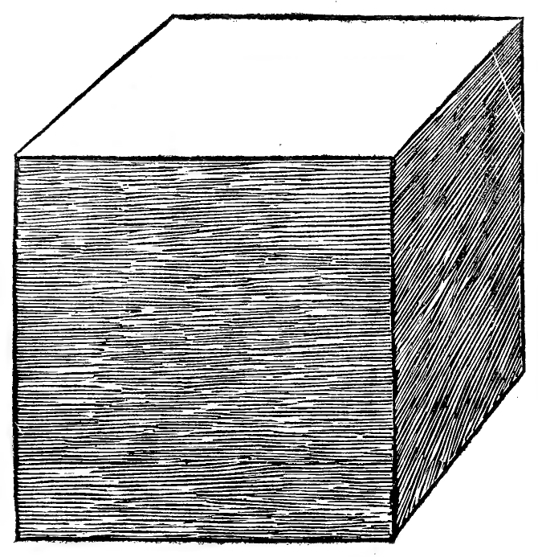
Solid Regular Hexahedron (Cube) — Exahedron sive Cubus Planum Solidum (Ἑξάεδρον ἢ κύβος ἐπίπεδον στερεόν)¶
Plate VIII (Folio 0201) — Hollow Regular Hexahedron (Cube)¶
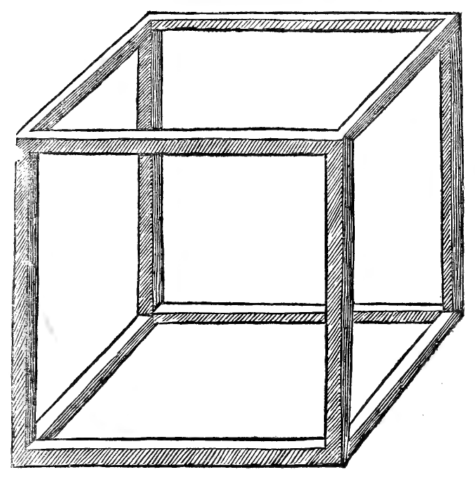
Hollow Regular Hexahedron (Cube) — Exahedron Planum Vacuum (Ἑξάεδρον ἐπίπεδον κενόν)¶
Plate VIIII (Folio 0203) — Solid Truncated Hexahedron (Cuboctahedron)¶
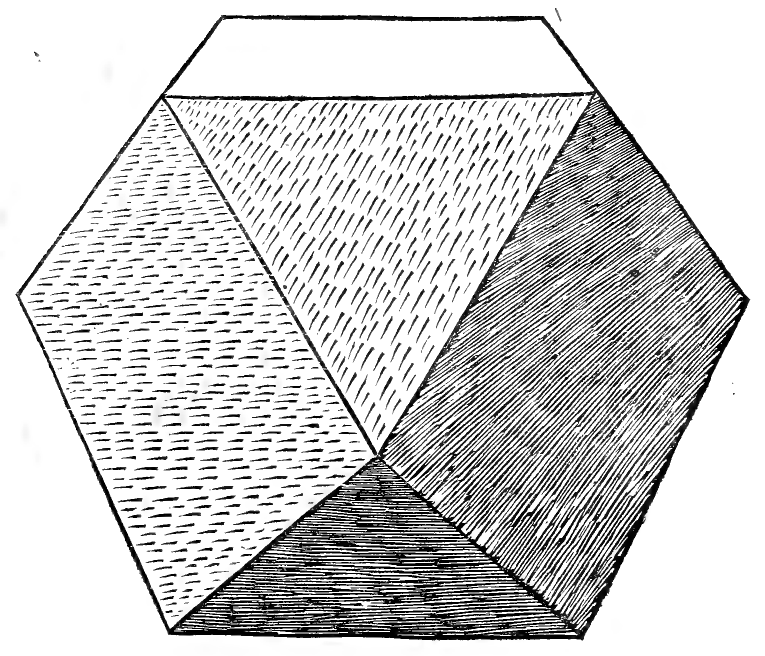
Solid Truncated Hexahedron (Cuboctahedron) — Exahedron Abscisum Solidum (Ἑξάεδρον ἀποτετμημένον στερεόν)¶
Plate X (Folio 0205) — Hollow Truncated Hexahedron (Cuboctahedron)¶
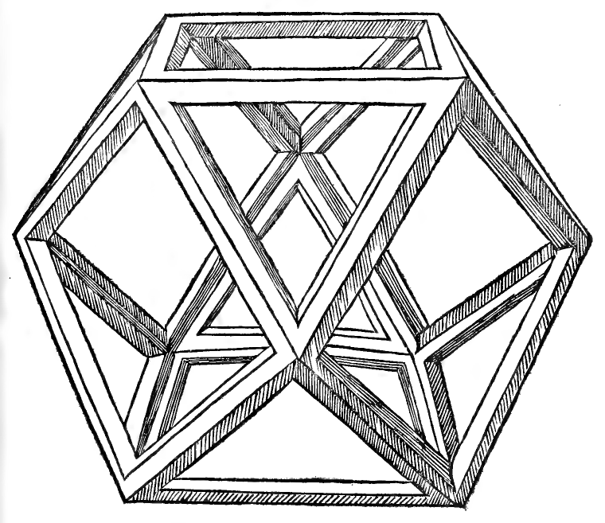
Hollow Truncated Hexahedron (Cuboctahedron) — Exahedron Abscisum Vacuum (Ἑξάεδρον ἀποτετμημένον κενόν)¶
Plate XI (Folio 0207) — Solid Elevated Hexahedron¶
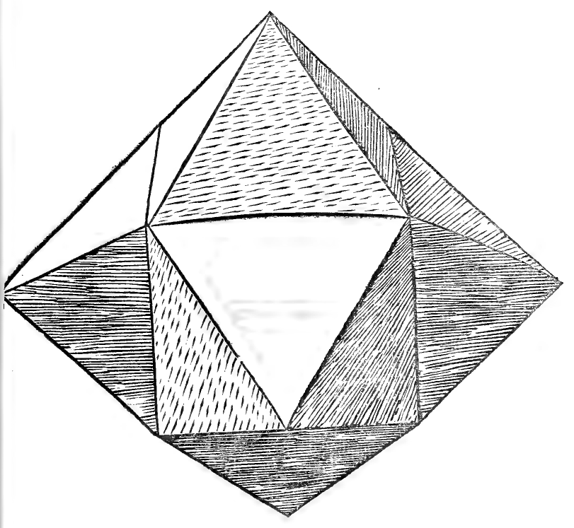
Solid Elevated Hexahedron — Exahedron Elevatum Solidum (Ἑξάεδρον ἐπηρμένον στερεόν)¶
Plate XII (Folio 0209) — Hollow Elevated Hexahedron¶
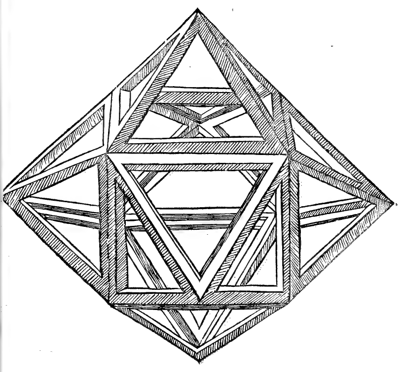
Hollow Elevated Hexahedron — Exahedron Elevatum Vacuum (Ἑξάεδρον ἐπηρμένον κενόν)¶
Plate XIII (Folio 0211) — Solid Elevated Truncated Hexahedron¶
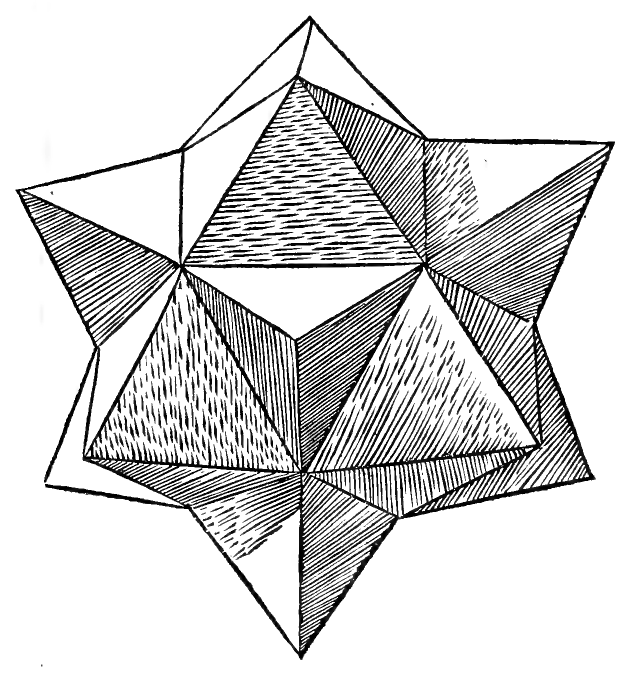
Solid Elevated Truncated Hexahedron — Exahedron Abscisum Elevatum Solidum (Ἑξάεδρον ἀποτετμημένον ἐπηρμένον στερεόν)¶
Plate XIIII (Folio 0217) — Hollow Elevated Truncated Hexahedron¶
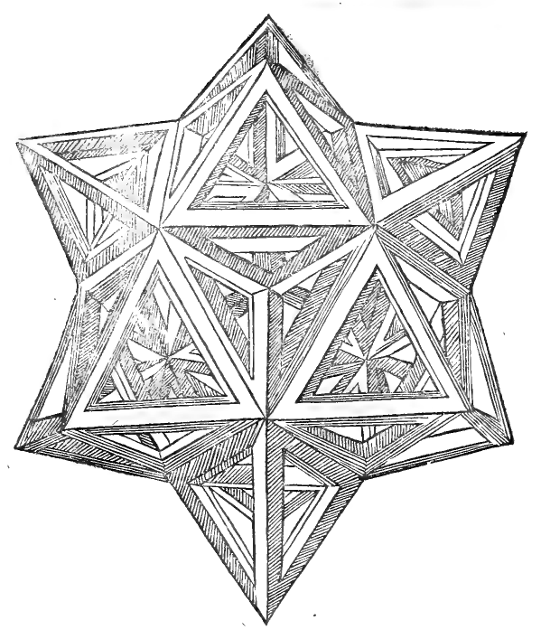
Hollow Elevated Truncated Hexahedron — Exahedron Abscisum Elevatum Vacuum (Ἑξάεδρον ἀποτετμημένον ἐπηρμένον κενόν)¶
Plate XV (Folio 0219) — Solid Regular Octahedron¶
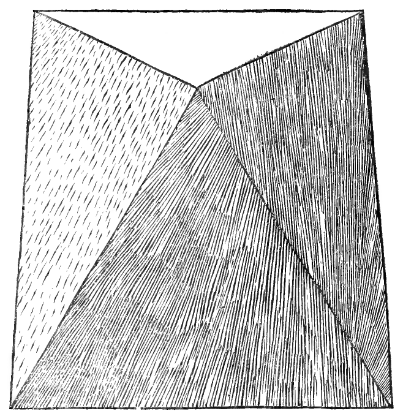
Solid Regular Octahedron — Octahedron Planum Solidum (Ὀκτάεδρον ἐπίπεδον στερεόν)¶
Plate XVI (Folio 0221) — Hollow Regular Octahedron¶
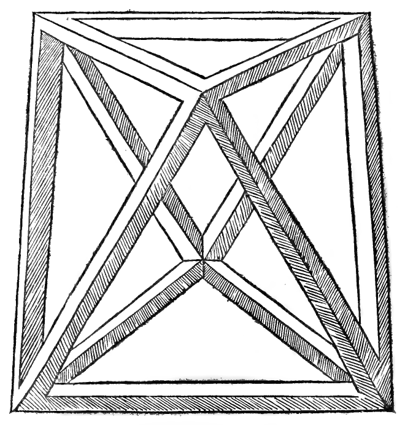
Hollow Regular Octahedron — Octahedron Planum Vacuum (Ὀκτάεδρον ἐπίπεδον κενόν)¶
Plate XVII (Folio 0223) — Solid Truncated Octahedron¶
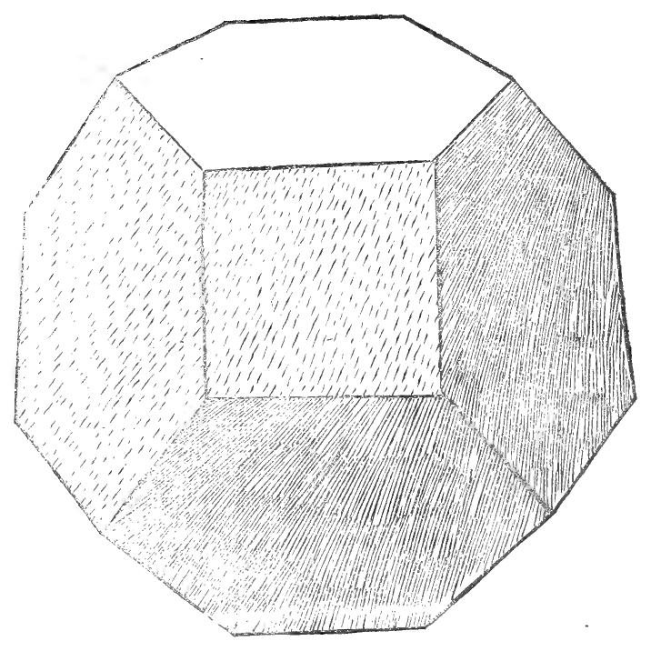
Solid Truncated Octahedron — Octahedron Abscisum Solidum (Ὀκτάεδρον ἀποτετμημένον στερεόν)¶
Plate XVIII (Folio 0225) — Hollow Truncated Octahedron¶
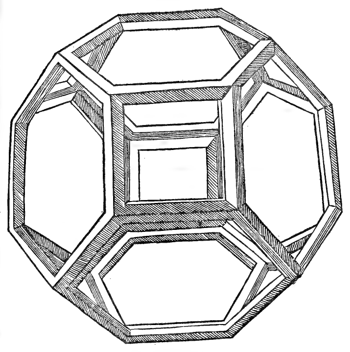
Hollow Truncated Octahedron — Octahedron Abscisum Vacuum (Ὀκτάεδρον ἀποτετμημένον κενόν)¶
Plate XIX (Folio 0227) — Solid Elevated Octahedron (Stella Octangula)¶
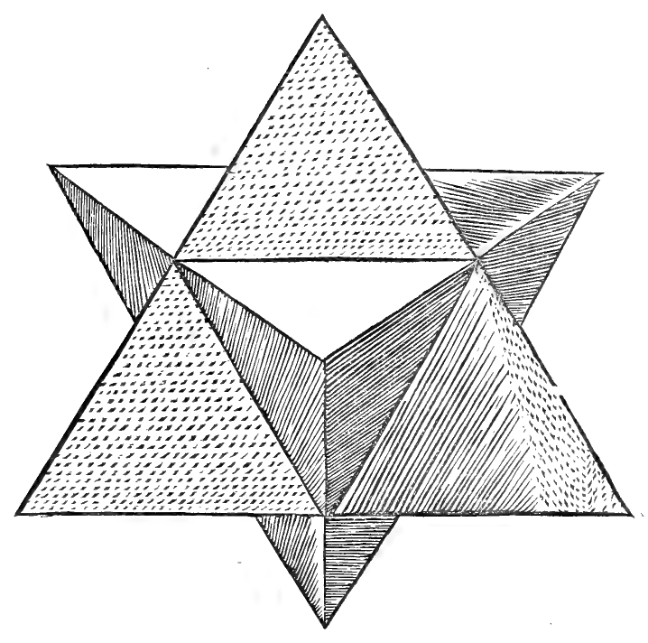
Solid Elevated Octahedron (Stella Octangula) — Octahedron Elevatum Solidum (Ὀκτάεδρον ἐπηρμένον στερεόν)¶
Plate XX (Folio 0229) — Hollow Elevated Octahedron (Stella Octangula)¶
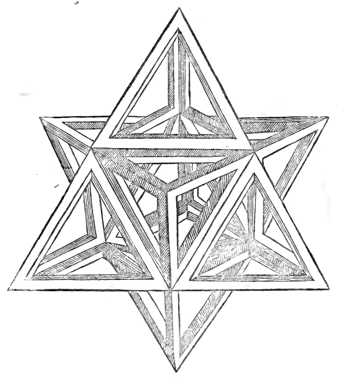
Hollow Elevated Octahedron (Stella Octangula) — Octahedron Elevatum Vacuum (Ὀκτάεδρον ἐπηρμένον κενόν)¶
Plate XXI (Folio 0231) — Solid Regular Icosahedron¶
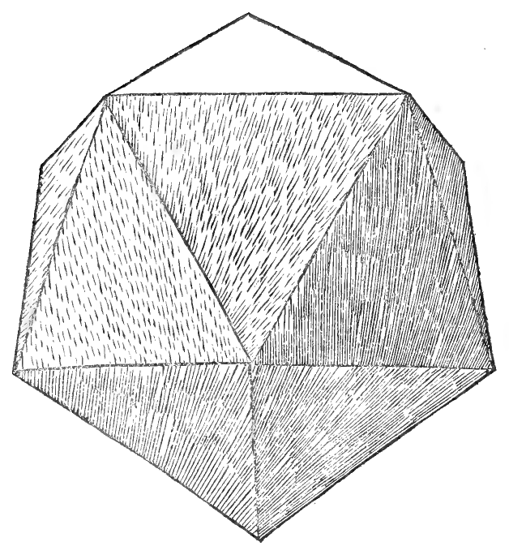
Solid Regular Icosahedron — Icosahedron Planum Solidum (Εἰκοσάεδρον ἐπίπεδον στερεόν)¶
Plate XXII (Folio 0233) — Hollow Regular Icosahedron¶
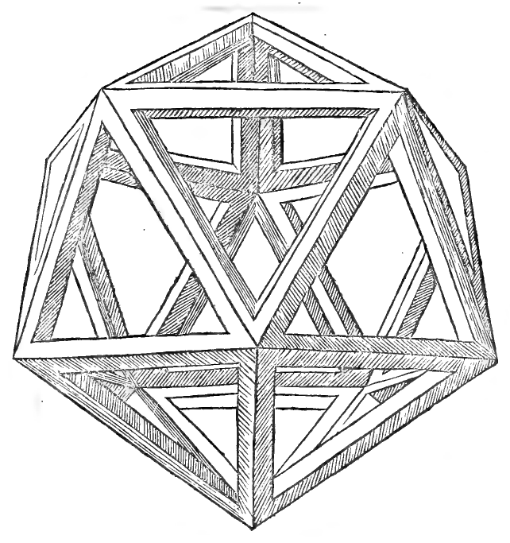
Hollow Regular Icosahedron — Icosahedron Planum Vacuum (Εἰκοσάεδρον ἐπίπεδον κενόν)¶
Plate XXIII (Folio 0235) — Solid Truncated Icosahedron¶
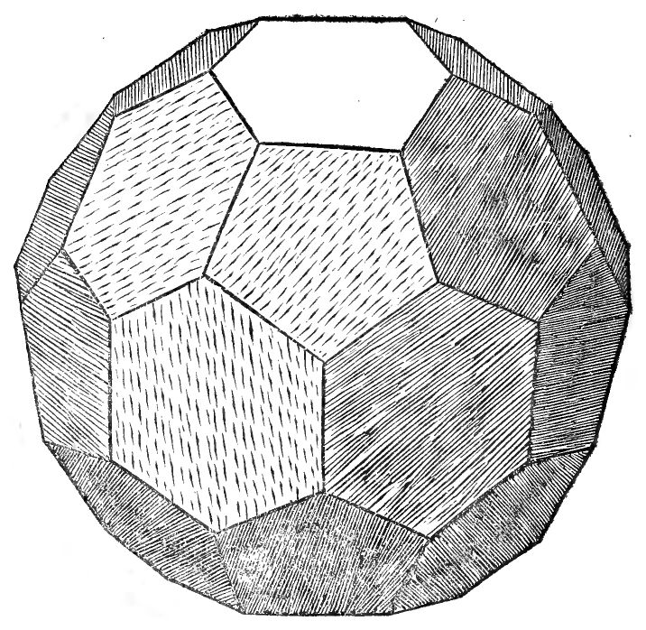
Solid Truncated Icosahedron — Icosahedron Abscisum Solidum (Εἰκοσάεδρον ἀποτετμημένον στερεόν)¶
Plate XXIIII (Folio 0237) — Hollow Truncated Icosahedron¶
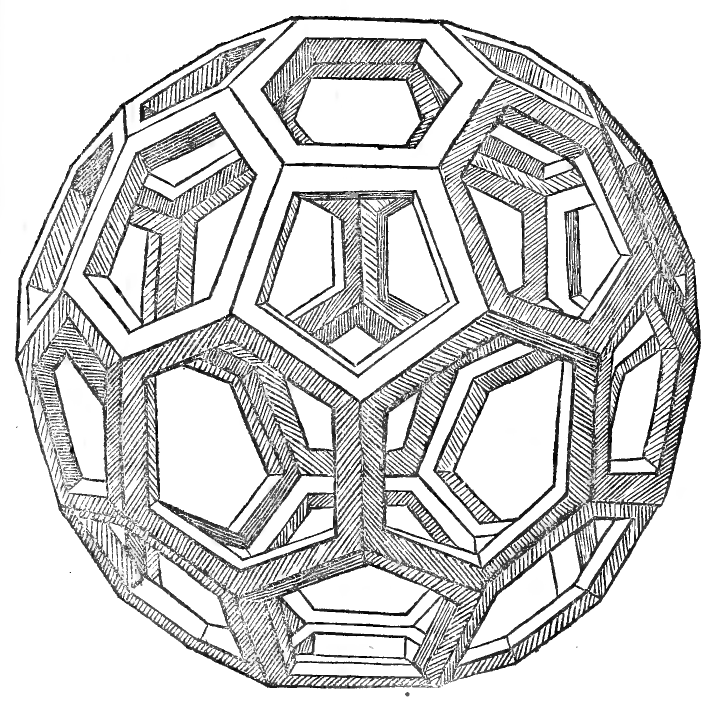
Hollow Truncated Icosahedron — Icosahedron Abscisum Vacuum (Εἰκοσάεδρον ἀποτετμημένον κενόν)¶
Plate XXV (Folio 0239) — Solid Elevated Icosahedron¶
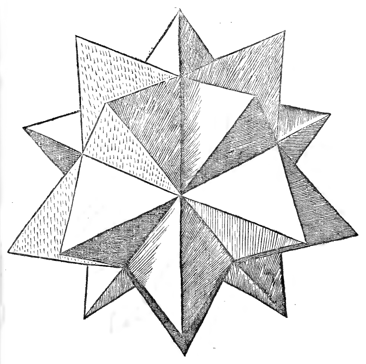
Solid Elevated Icosahedron — Icosahedron Elevatum Solidum (Εἰκοσάεδρον ἐπηρμένον στερεόν)¶
Plate XXVI (Folio 0241) — Hollow Elevated Icosahedron¶
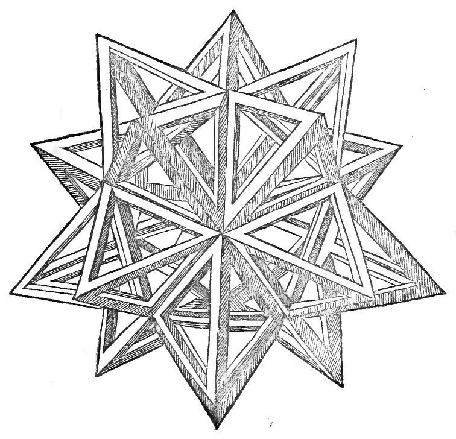
Hollow Elevated Icosahedron — Icosahedron Elevatum Vacuum (Εἰκοσάεδρον ἐπηρμένον κενόν)¶
Plate XXVII (Folio 0243) — Solid Regular Dodecahedron¶
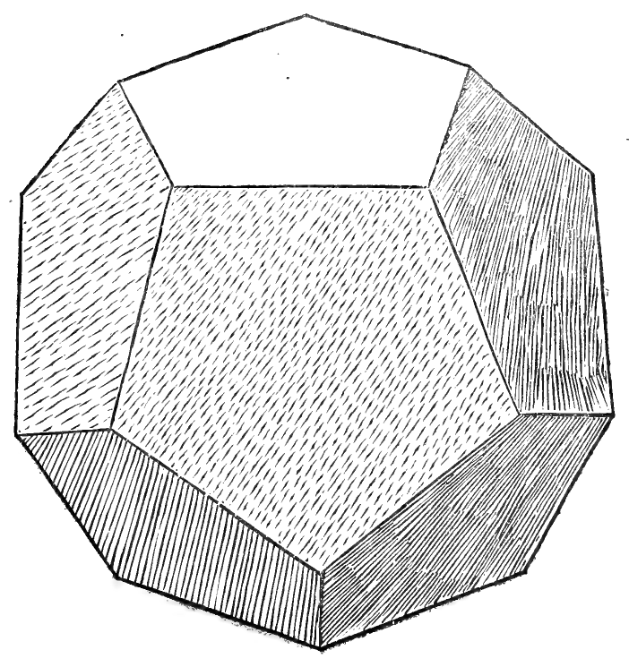
Solid Regular Dodecahedron — Dodecahedron Planum Solidum (Δωδεκάεδρον ἐπίπεδον στερεόν)¶
Plate XXVIII (Folio 0245) — Hollow Regular Dodecahedron¶
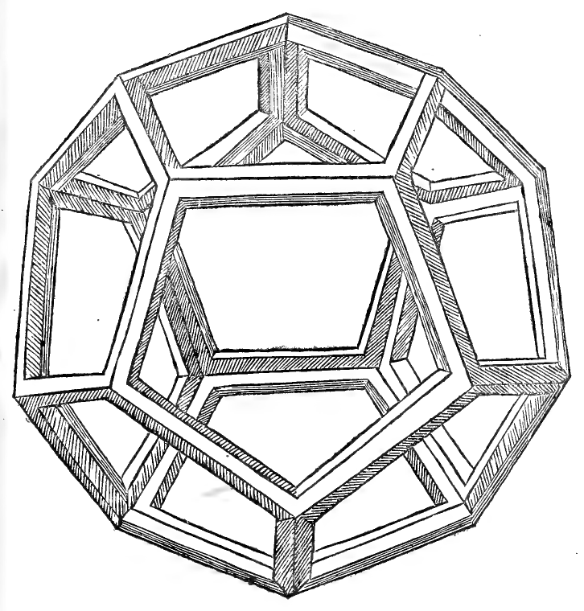
Hollow Regular Dodecahedron — Dodecahedron Planum Vacuum (Δωδεκάεδρον ἐπίπεδον κενόν)¶
Plate XXIX (Folio 0247) — Solid Truncated Dodecahedron (Icosidodecahedron)¶
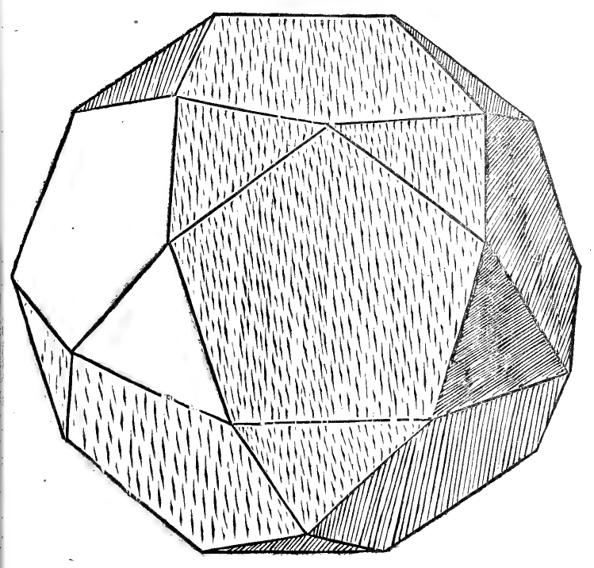
Solid Truncated Dodecahedron (Icosidodecahedron) — Dodecahedron Abscisum Solidum (Δωδεκάεδρον ἀποτετμημένον στερεόν)¶
Plate XXX (Folio 0249) — Hollow Truncated Dodecahedron (Icosidodecahedron)¶
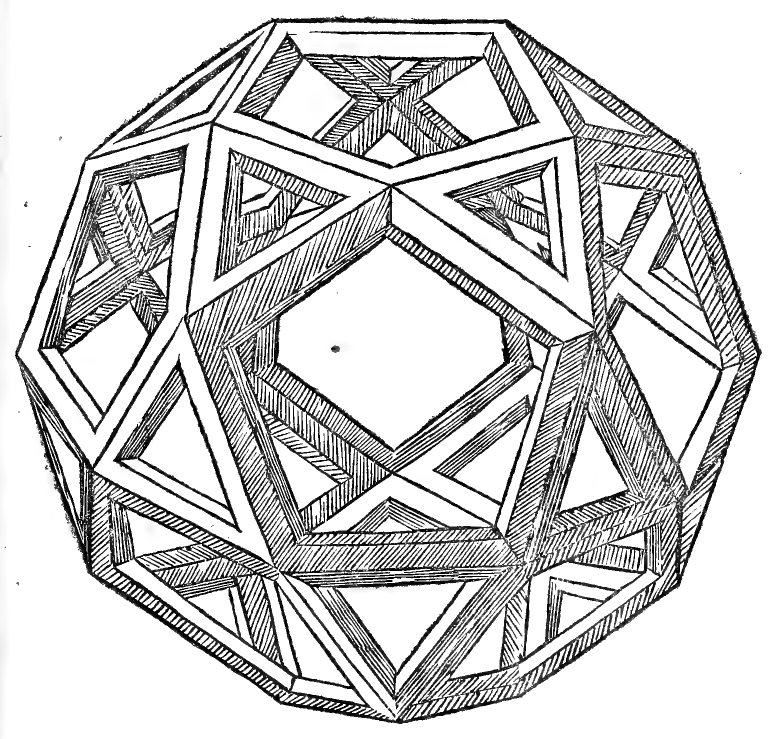
Hollow Truncated Dodecahedron (Icosidodecahedron) — Dodecahedron Abscisum Vacuum (Δωδεκάεδρον ἀποτετμημένον κενόν)¶
Plate XXXI (Folio 0251) — Solid Elevated Dodecahedron¶
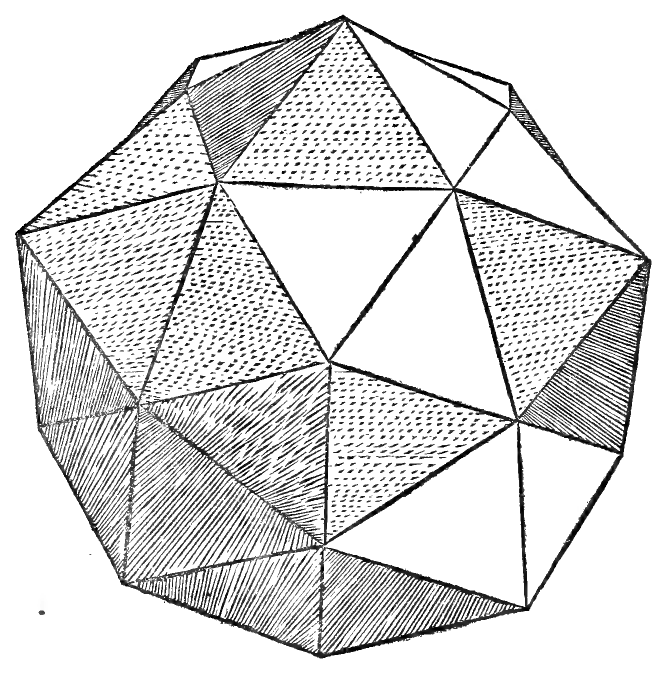
Solid Elevated Dodecahedron — Dodecahedron Elevatum Solidum (Δωδεκάεδρον ἐπηρμένον στερεόν)¶
Plate XXXII (Folio 0253) — Hollow Elevated Dodecahedron¶
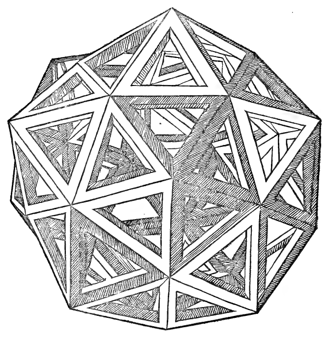
Hollow Elevated Dodecahedron — Dodecahedron Elevatum Vacuum (Δωδεκάεδρον ἐπηρμένον κενόν)¶
Plate XXXIII (Folio 0255) — Solid Elevated Truncated Dodecahedron¶
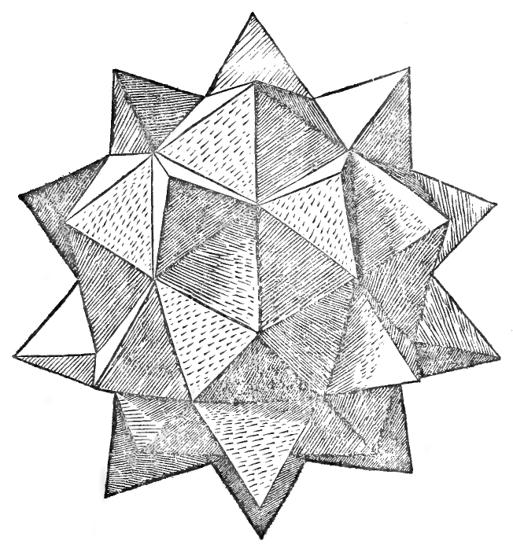
Solid Elevated Truncated Dodecahedron — Dodecahedron Abscisum Elevatum Solidum (Δωδεκάεδρον ἀποτετμημένον ἐπηρμένον στερεόν)¶
Plate XXXIIII (Folio 0257) — Hollow Elevated Truncated Dodecahedron¶
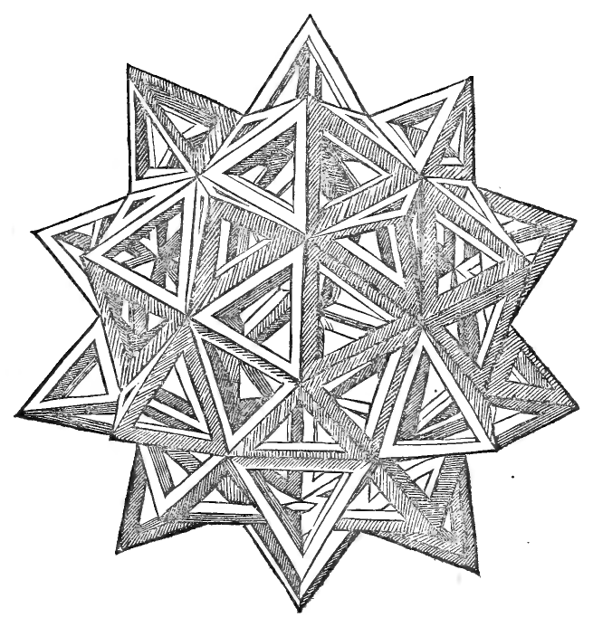
Hollow Elevated Truncated Dodecahedron — Dodecahedron Abscisum Elevatum Vacuum (Δωδεκάεδρον ἀποτετμημένον ἐπηρμένον κενόν)¶
Plate XXXV (Folio 0259) — Solid 26-Base Body (Rhombicuboctahedron)¶
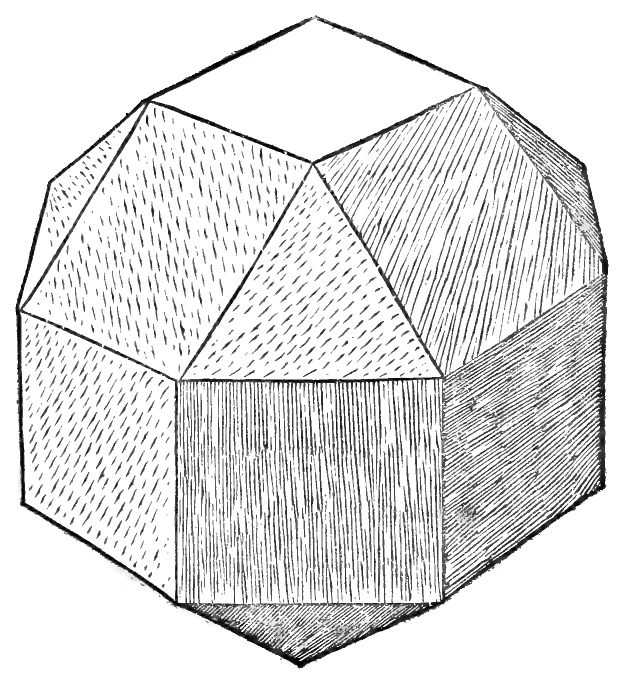
Solid 26-Base Body (Rhombicuboctahedron) — Vigintisex Basium Planum Solidum (Εἰκοσιεξάεδρον ἐπίπεδον στερεόν)¶
Plate XXXVI (Folio 0261) — Hollow 26-Base Body (Rhombicuboctahedron)¶
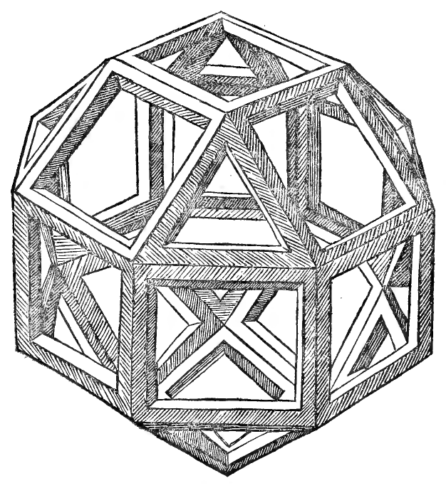
Hollow 26-Base Body (Rhombicuboctahedron) — Vigintisex Basium Planum Vacuum (Εἰκοσιεξάεδρον ἐπίπεδον κενόν)¶
Plate XXXVII (Folio 0263) — Solid Elevated 26-Base Body¶
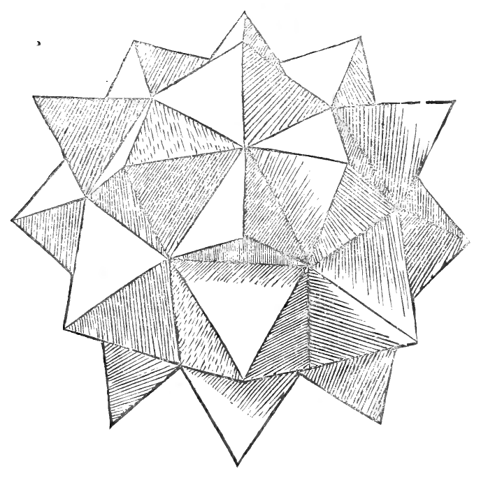
Solid Elevated 26-Base Body — Vigintisex Basium Abscisum Elevatum Solidum (Εἰκοσιεξάεδρον ἀποτετμημένον ἐπηρμένον στερεόν)¶
Plate XXXVIII (Folio 0265) — Hollow Elevated 26-Base Body¶
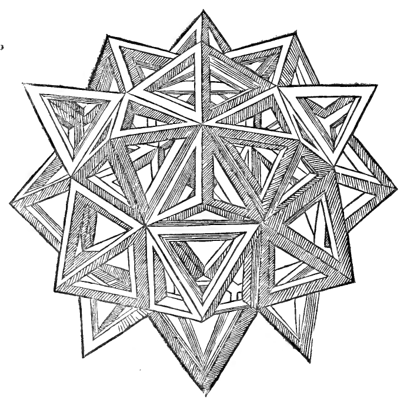
Hollow Elevated 26-Base Body — Vigintisex Basium Abscisum Elevatum Vacuum (Εἰκοσιεξάεδρον ἀποτετμημένον ἐπηρμένον κενόν)¶
Plate XXXIX (Folio 0267) — Solid 72-Base Body¶
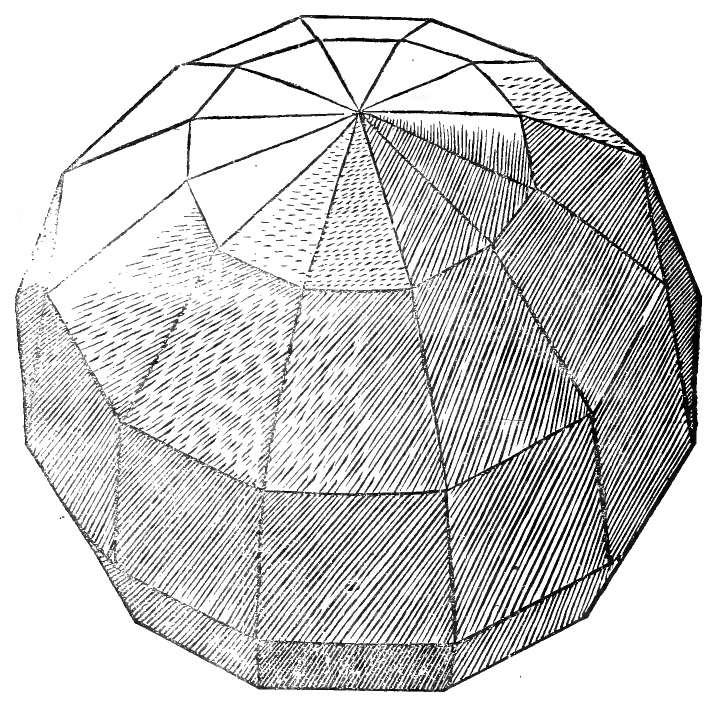
Solid 72-Base Body — Septuaginta Duarum Basium Solidum (Ἑβδομηκονταδισσάεδρον στερεόν)¶
Plate XL (Folio 0269) — Hollow 72-Base Body¶
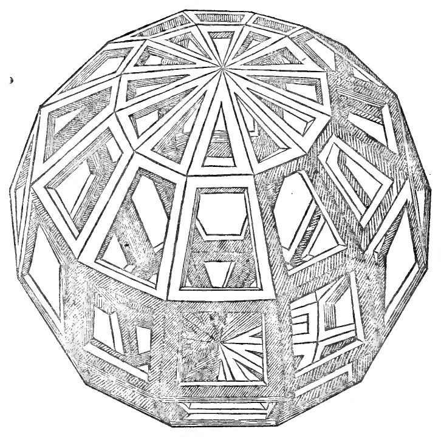
Hollow 72-Base Body — Septuaginta Duarum Basium Vacuum (Ἑβδομηκονταδισσάεδρον κενόν)¶
Plate XLI (Folio 0271) — Solid Triangular Prism (Corpus Seratile)¶
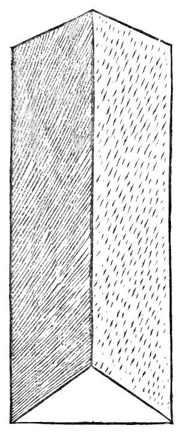
Solid Triangular Prism (Corpus Seratile) — Columna Laterata Triangula Solida (Κίων πλευρώδης τρίγωνος στερεός)¶
Plate XLII (Folio 0273) — Hollow Triangular Prism¶
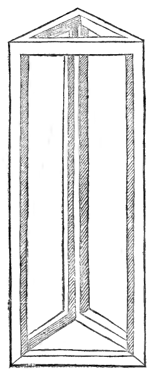
Hollow Triangular Prism — Columna Laterata Triangula Vacua (Κίων πλευρώδης τρίγωνος κενός)¶
Plate XLIII (Folio 0275) — Solid Triangular Pyramid¶
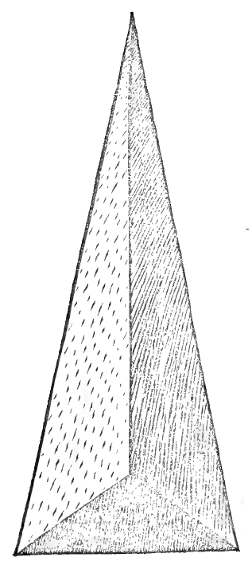
Solid Triangular Pyramid — Pyramis Laterata Triangula Solida (Πυραμὶς πλευρώδης τρίγωνος στερεά)¶
Plate XLIIII (Folio 0277) — Hollow Triangular Pyramid¶
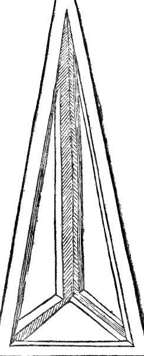
Hollow Triangular Pyramid — Pyramis Laterata Triangula Vacua (Πυραμὶς πλευρώδης τρίγωνος κενή)¶
Plate XLV (Folio 0279) — Solid Quadrangular Prism¶
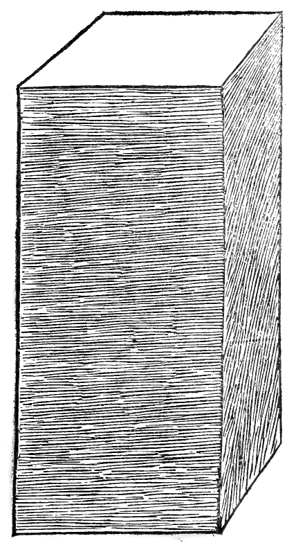
Solid Quadrangular Prism — Columna Laterata Quadrangula Solida (Κίων πλευρώδης τετράγωνος στερεός)¶
Plate XLVI (Folio 0281) — Hollow Quadrangular Prism¶
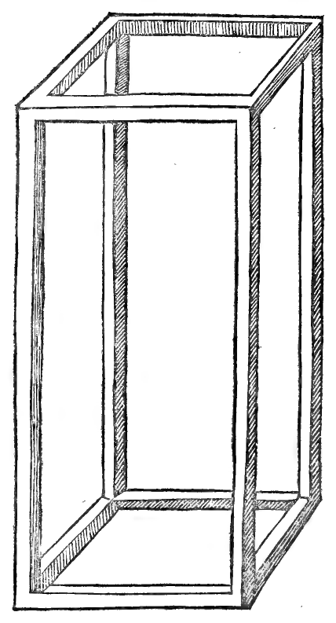
Hollow Quadrangular Prism — Columna Laterata Quadrangula Vacua (Κίων πλευρώδης τετράγωνος κενός)¶
Plate XLVII (Folio 0283) — Solid Quadrangular Pyramid¶
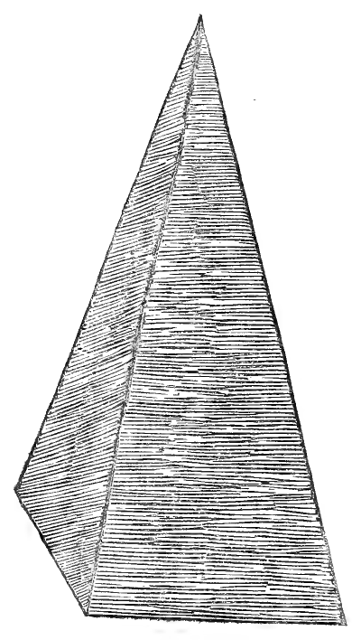
Solid Quadrangular Pyramid — Pyramis Laterata Quadrangula Solida (Πυραμὶς πλευρώδης τετράγωνος στερεά)¶
Plate XLVII-bis (Folio 0285) — Solid Quadrangular Pyramid (Duplicate Scan in Witness)¶
Solid Quadrangular Pyramid (Duplicate Scan in Witness) — Pyramis Laterata Quadrangula Solida (bis) (Πυραμὶς πλευρώδης τετράγωνος στερεά)¶
Plate XLVIII (Folio 0287) — Hollow Quadrangular Pyramid¶
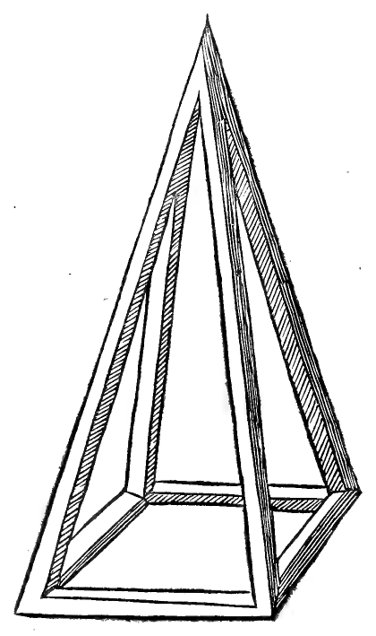
Hollow Quadrangular Pyramid — Pyramis Laterata Quadrangula Vacua (Πυραμὶς πλευρώδης τετράγωνος κενή)¶
Plate XLIX (Folio 0289) — Solid Pentagonal Prism¶
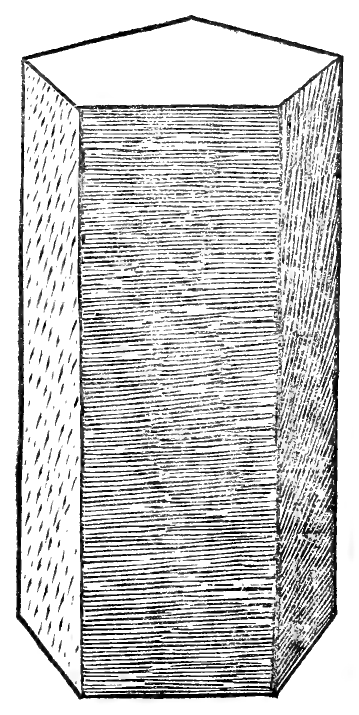
Solid Pentagonal Prism — Columna Laterata Penthagona Solida (Κίων πλευρώδης πεντάγωνος στερεός)¶
Plate L (Folio 0291) — Hollow Pentagonal Prism¶
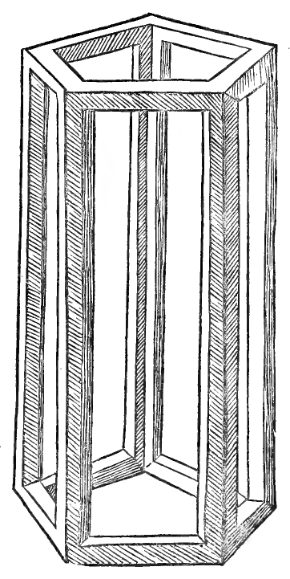
Hollow Pentagonal Prism — Columna Laterata Penthagona Vacua (Κίων πλευρώδης πεντάγωνος κενός)¶
Plate LI (Folio 0293) — Solid Pentagonal Pyramid¶
Solid Pentagonal Pyramid — Pyramis Laterata Penthagona Solida (Πυραμὶς πλευρώδης πεντάγωνος στερεά)¶
Plate LII (Folio 0295) — Hollow Pentagonal Pyramid¶
Hollow Pentagonal Pyramid — Pyramis Laterata Penthagona Vacua (Πυραμὶς πλευρώδης πεντάγωνος κενή)¶
Plate LIII (Folio 0297) — Solid Hexagonal Prism¶
Solid Hexagonal Prism — Columna Laterata Exagona Solida (Κίων πλευρώδης ἑξάγωνος στερεός)¶
Plate LIIII (Folio 0299) — Hollow Hexagonal Prism¶
Hollow Hexagonal Prism — Columna Laterata Exagona Vacua (Κίων πλευρώδης ἑξάγωνος κενός)¶
Plate LV (Folio 0301) — Solid Scalene Triangular Pyramid¶
Solid Scalene Triangular Pyramid — Pyramis Laterata Triangula Inaequilatera Solida (Πυραμὶς πλευρώδης τρίγωνος ἀνισόπλευρος στερεά)¶
Plate LVI (Folio 0303) — Hollow Scalene Triangular Pyramid¶
Hollow Scalene Triangular Pyramid — Pyramis Laterata Triangula Inaequilatera Vacua (Πυραμὶς πλευρώδης τρίγωνος ἀνισόπλευρος κενή)¶
Plate LVII (Folio 0305) — Solid Round Column (Cylinder)¶
Solid Round Column (Cylinder) — Columna Rotunda Solida (Κίων στρογγύλος στερεός)¶
Plate LVIII (Folio 0307) — Solid Round Pyramid (Cone)¶
Solid Round Pyramid (Cone) — Pyramis Rotunda Solida (Πυραμὶς στρογγύλη στερεά)¶